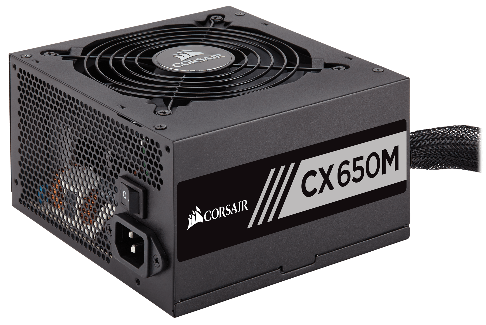

|
|
| FORM PEMBELIAN KOMPUTER DISINI!! |
Power Supply Unit
|
PSU, atau Power Supply Unit, adalah komponen krusial dalam sistem komputer yang bertugas menyediakan daya listrik untuk semua komponen dan perangkat keras di dalamnya. PSU mengubah arus listrik dari sumber utama, seperti listrik AC dari stopkontak, menjadi arus DC yang stabil dan sesuai dengan kebutuhan berbagai bagian komputer. Dengan begitu, PSU memastikan bahwa semua komponen, seperti prosesor, motherboard, dan kartu grafis, mendapatkan pasokan listrik yang diperlukan untuk berfungsi dengan baik. PSU memiliki berbagai spesifikasi yang menentukan kemampuannya dalam menyediakan daya, termasuk watt (yang menunjukkan kapasitas total daya yang bisa disuplai) dan efisiensi. Efisiensi PSU mengacu pada seberapa baik PSU mengubah daya dari sumber listrik menjadi daya yang digunakan oleh komputer, serta seberapa sedikit energi yang hilang dalam bentuk panas. PSU dengan efisiensi tinggi dapat mengurangi konsumsi energi dan menghasilkan lebih sedikit panas, yang berkontribusi pada stabilitas sistem dan umur panjang perangkat keras. Pemilihan PSU yang tepat sangat penting untuk memastikan stabilitas dan keandalan sistem komputer. PSU harus memiliki daya yang cukup untuk mendukung semua komponen dalam sistem, terutama jika ada perangkat keras yang memerlukan konsumsi daya tinggi, seperti kartu grafis high-end atau sistem multi-prosesor. Selain itu, PSU yang berkualitas baik juga dilengkapi dengan perlindungan terhadap lonjakan daya, korsleting, dan masalah lain yang dapat merusak komponen komputer |
 |